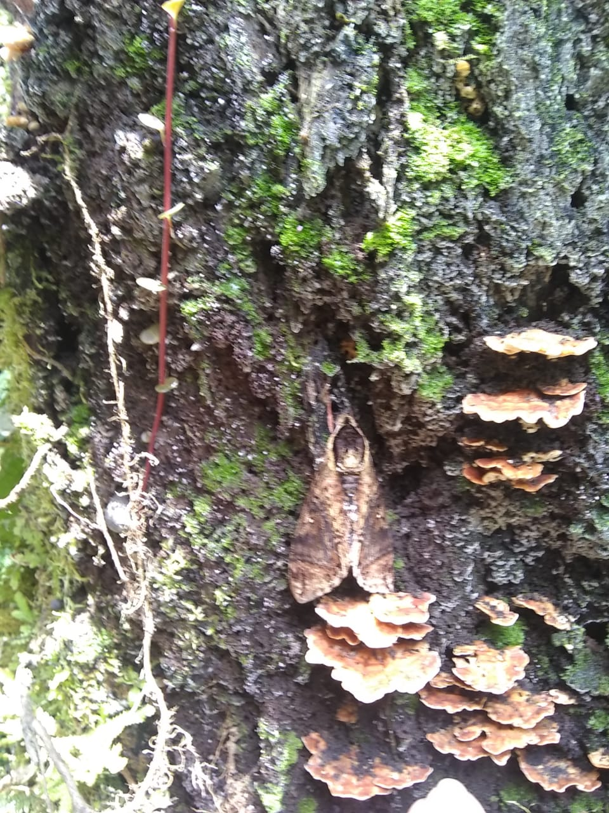
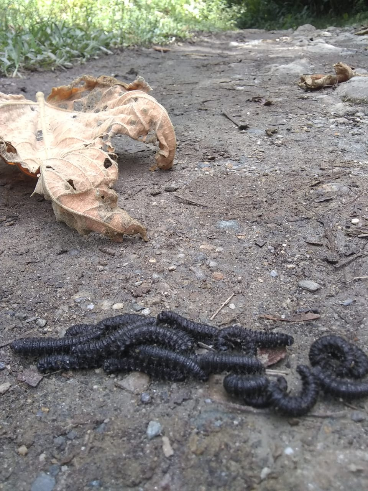
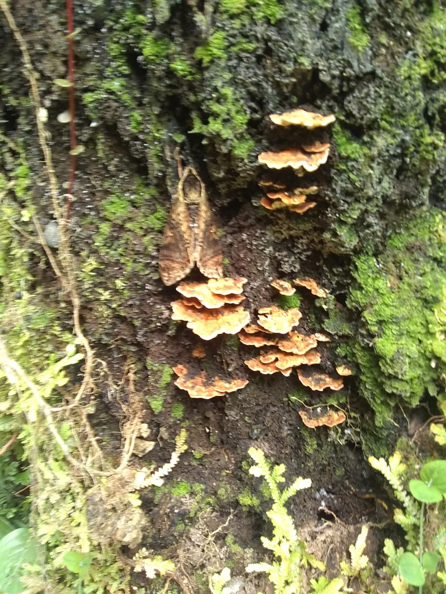
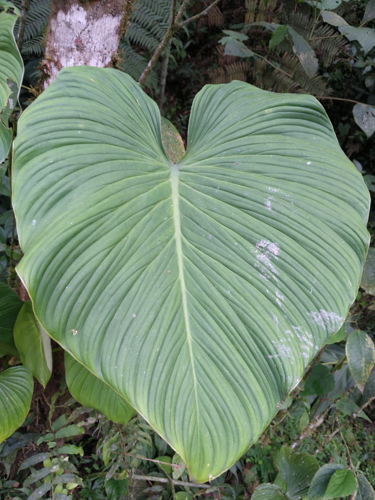
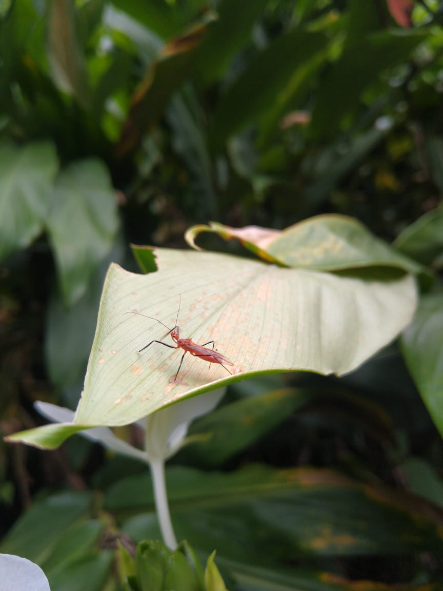
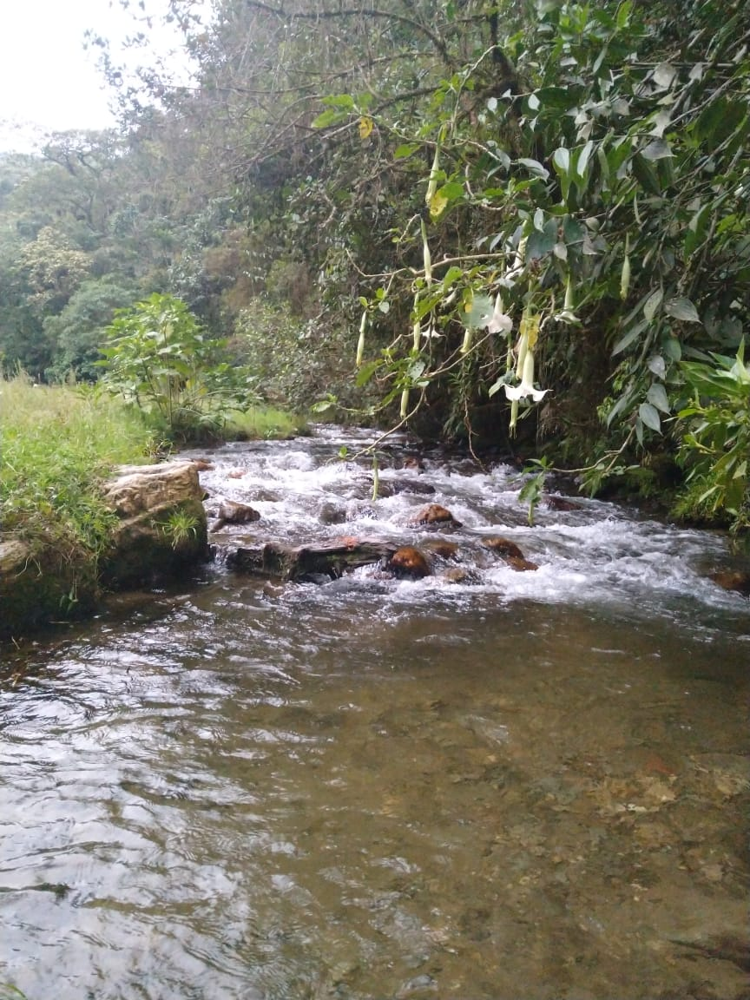

Se trata de cumplir nuestra meta para el año 2025; sembrar 1 millón de árboles en Antioquia inicialmente, luego, se hará en todo el país.
     Queremos llegar a cada rincón del país, llevando la seguridad alimentaria como prioridad, garantizando una alimentación balanceada, constante, de calidad, sin trazas de químicos o contaminantes secundarios derivados por la acción del hombre. Logrando un equilibrio ecosistémico, aprender de auto cuidado y a conservar el equilibrio natural.